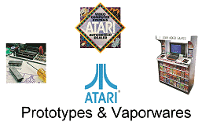

|
It began,
like most of us, when we bought or were luckily given an
Atari console or computer. Most people would leave
it at that.
But the
Atari community is a resilient bunch, if not a little
sentimental. Atari probably never realised how
loyal their users were (although there have been some
within Atari that always knew this) and it is with great
pride that many people today still collect Atari
hardware and software, as well as maintaining some great
websites. Software is still written for nearly
every platform Atari created, and it is a testament to
the build quality of the machines, that they still
continue to operate many years after their theoretical
MTBF (mean-time before failure).

Although
active in the Atari community for years, the Atari
Historical Society (AHS) was formally created in 1997 by
Curt Vendel. I can still remember finding Curt's
first website, "Atari Prototypes and Vapourware", and it
was this website that gave me the Atari-bug once again.
Since then, Curt Vendel has been ever active in
preserving the history of Atari, and sharing all this
information online, and by visiting various shows with
his "travelling" museum.
My small
contribution to the AHS was made by helping Curt improve
sections of his website (still an-ongoing project) and
passing on Atari collectables from Europe whenever
possible. I was happy to help the AHS by providing
contact and assistance to European users and collectors,
and a steady stream of e-mails still come in from old
and new users alike. The most common e-mail query
is still about power supplies!
Atari
Explorer is still the baby brother of the Atari Museum
(the AHS website -
www.atarimuseum.com), but we are both working
towards a common goal, and that is to remember Atari and
it products, and share this information for everybody's
enjoyment.
Karl @ AEX |